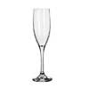

Beer Glassware
As soon as the beer hits the glass, its color, aroma and taste is altered, your eye candy receptors tune in, and your anticipation is tweaked. Hidden nuances, become more pronounced, colors shimmer, and the enjoyment of the beer simply becomes a better, more complete, experience. So which glassware do you use?
| Flute |
The world of champagne lends elegance to certain types of beer. Long and narrow bodies ensure that carbonation doesn't dissipate too quickly and showcase a lively carbonation or sparkling color. Stems will often be a bit shorter than the traditional champagne glass, but not necessarily. Benefits: Enhances and showcases carbonation. Releases volatiles quickly for a more intense upfront aroma. |
|---|---|
| Chalice |
Majestic pieces of work, ranging from delicate and long stemmed (Goblet) to heavy and thick walled (Chalice). The more delicate ones may also have their rims laced with silver or gold, while the heavy boast sculpture-like stems. Some are designed to maintain a 2-centimeter head. This is achieved by scoring the inside bottom of the glass, which creates a CO2 nucleation point, and a stream of eternal bubbles and perfect head retention as a result. Benefits: Eye candy. Designed to maintain head. Wide-mouthed for deep sips. |
| Pint |
Near cylindrical, with a slight taper and wide-mouth. There are two standard sizes, the 16-ounce (US Tumbler - the pour man's pint glass and most common) or the 20-ounce Imperial (Nonic), which has a slight ridge towards the top, a grip of sorts and helps in stacking them. The 20-ounce version is preferred to accommodate more beer or beers with large crowning heads. A Becker is the German equivalent, tapering at the top. Benefits: Cheap to make. Easy to store. Easy to drink out of. |
| Snifter |
Used for brandy and cognac, these wide-bowled and stemmed glasses with their tapered mouths are perfect for capturing the aromas of strong ales. Volumes range, but they all provide room to swirl and agitate volatiles. Benefits: Captures and enhances volatiles. |
| Tulip |
A stemmed glass, obviously tulip-shaped, wherein the top of the glass pushes out a bit to form a lip in order to capture the head and the body is bulbous. Scotch Ales are often served in a thistle glass which is a modified tulip glass that resembles Scotland's national flower. Benefits: Captures and enhances volatiles, while it induces and supports large foamy heads. |